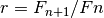
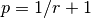
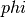
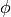
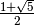
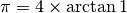
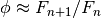
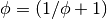
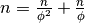
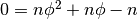

Python Architecture¶
The HamCalc Python rewrite extracts the useful bits from HamCalc, leaving out the GW-Basic quirks.
The target platform should Python 3.x (3.2.4 or later.) There’s no compelling reason to support Python 2.7.
This section will review the architecture for the Python port of HamCalc.
To make the architecture more concrete, one of the HamCalc programs will be analyzed in detail to show how it is converted to the new architecture.
Architecture¶
The goal is to have a cleanly layered architecture that separates HamCalc into
- Core Calculations.
- Applications.
The core calculations are highly reusable. The applications offer a variety of user interface presentations.
There are a dozen or so packages that contain the core calculation package.
Each calculation package may have multiple implementations and a default implementation.
An implementation can be any combination of Python components. It can be pure function or class definitions.
It’s important that the core calculation module have with no further application or user interface implied. There should be any number of alternative user interface presentations.
For comparison purposes, a stdio console application can be developed. This would use input() and print() to emulate the original HamCalc look and feel. This would import the core calculation modules.
A RESTful web services server could be built that would accept REST requests and respond with a JSON document. This would import the core calculation modules.
A desktop GUI could be written which uses the same core calculation modules, also.
A test package is also essential for demonstrating that the calculations actually work.
Finally, this documentation package can include references and links.
Key Design Patterns¶
There are several overall design patterns.
The Table Pattern¶
Many HamCalc modules have a design pattern called a Table.
Given zero or a few parameters, a table of values is produced. This might be a table of Fibonacci Numbers, or a table of AWG wire sizes.
This means that the core calculation is an iterator, usually a generator function. The top-level application will request a iterable collection of values from this generator function.
The Fibonacci values (examined in detail below) is a kind of Table application.
The Solver Pattern¶
Many HamCalc modules have a design pattern called a Solver.
These are programs which can accept a variety of input values and solve for the missing values.
The canonical example is a Rate-Time-Distance (RTD) solver. Given any two (Rate-Time, Rate-Distance, Time-Distance), the third can be derived from the other two.
In GW-Basic, failure to enter a value lead to the input being zero.
This means that the solver would attempt to compute the values which had an input value of zero. This can be a little awkward in the rare case when zero is a valid value.
Python, however, introduces None, which is outside the number domain, removing the quirky constraint of “zero means solve for this.”
Better still, Python’s use of a dictionary as the source for keyword arguments means that a solver can look like this.
def force( **kw ):
"""Solve f = m * a problems.
:param m: mass (kg)
:param a: acceleration (m/s^2)
:param f: force in Newtons (kg m/s^s)
:returns: Dictionary with all three values.
"""
if 'm' in kw and 'a' in kw:
kw.update(f = kw['m'] * kw['a'])
elif 'f' in kw and 'm' in kw:
kw.update(a = kw['f'] / kw['m'])
elif 'f' in kw and 'a' in kw:
kw.update(m = kw['f'] / kw['a'])
return kw
This function can be used like this.
>>> force( a=2.5, m=12000 )
{'a': 2.5, 'm': 12000, 'f': 30000.0}
This means a script can do something like this:
args= dict()
raw= input( "Mass [kg]? " )
if raw: args['f']= float(raw)
raw= input( "Acceleration [m/s^2]? " )
if raw: args['a']= float(raw)
raw= input( "Force [kg m/s^2]? " )
if raw: args['f']= float(raw)
args= force( **args )
print( "Mass of moving object (kilograms)..M= {m:10.3f}".format(**args) )
print( "Acceleration constant (m./sec.)....A= {a:10.3f}".format(**args) )
print( "Acceleration force (newtone).......F= {f:10.3f}".format(**args) )
The Equivalents Pattern¶
Some HamCalc modules have a design pattern called Equivalents.
This is a display of values, each of which is converted into different units via a simple conversion function (or factor).
This is like a Solver in some ways. Only one of the values need be provided as an input. All of the other values are derived from this one.
The subtlety is the way the units and unit conversions are defined. For the most part, HamCalc treats unit conversions as simple multipliers, and uses GW-Basic DATA statements to define the name, an abbreviation and the conversion factor.
This doesn’t cover temperatures well, but that’s so specialized that it doesn’t matter. Fahrenheit and Celsius conversions aren’t simple multiplies. All other conversions are.
Over the Top Dimensioned Number Design¶
A completely general “dimensioned number” class is overkill for this application. We could define a subclass of float; this could add features to track dimensions. For __add__() and __sub__() it would assure that the units where the same or it would convert. For __mul__() and __div__() it would infer the resulting units.
So, we could have Dim(2.5, M_SEC) * Dim(2, SEC) resulting in Dim( 5, M ). The resulting object would have the proper units.
Note that this doesn’t work trivially with JSON seralization. We need to provide ways to serialize these values that would work outside Python as well as inside Python.
Simpler Unit Conversion Design¶
Rather than create a class hierarchy which includes algorithms to correctly reason out the dimensions, we’ll stick to the intent of HamCalc and simply provide conversion factors.
However.
We don’t want to have the conversions be simple, semantically empty, multiply or divide operations. We’d like a unit or dimension to be an object or perhaps a class that has independent existence.
Note that a conversion should be implemented as a two step process. First, we convert the value from source unit to standard unit. Second, we convert from the standard unit to target unit. Yes. Two steps. It’s simpler than building a matrix of all possible conversion combinations.
We have two chocies for definition of a Unit.
Object. If each unit is an object (of class Unit) a dimensioned number becomes a tuple of value and unit. The unit objects have to be loaded and identified with some kind of name. This makes JSON serialization annoying and slightly more complex.
Class. If each unit is a distinct class, a dimensioned number is still a tuple of value and unit. The unit class definitions are imported (and global). The name is unique by Python class naming rules. The unit can be transformed from string to class with eval().
The Dimensioned Number (“Unit”) Class¶
Here’s the class-based definition of a Unit. This packages each conversion as stand-alone class with all “static” and “class” methods. No instance needs to be created.
Each non-standard unit will be able convert to and from the standard unit. The standard unit does no conversion.
For temperature, the methods must be overridden. For all other units, factors can be provided.
The abstract base classes look like this.
class Unit:
factor= 1.0
@classmethod
def to_std( class_, value ):
return value*class_.factor
@classmethod
def from_std( class_, value ):
return value/class_.factor
class Standard_Unit( Unit ):
@staticmethod
def to_std( value ):
return value
@staticmethod
def from_std( value ):
return value
Here are two implementation classes to show how millimeters and inches would be represented.
class MM( Standard_Unit )
"""millimeter"""
name= "mm"
class IN( Unit )
"""inch"""
name= "in"
standard= MM
factor= 2.54
We can use these implementation classes to convert among units like this. Once we have some input, we have to convert it to “standard” units and from the standard unit back to the output unit.
length_in= float( input( "Distance [in]? " ) )
length= IN.to_std( length_in )
length_mm= MM.from_std( length )
The syntax is a bit clunky, but numbers are not bound to the units, and JSON serialization for a RESTful interface is much simpler. And the two-step conversion means that we don’t have a giant matrix with all combinations of conversions.
Here’s how temperature would be implemented.
class Celsius( Standard_Unit ):
pass
class Fahrenheit( Unit ):
standard= Celsius
@classmethod
def to_std( class_, value ):
return (value-32)*5/9
@classmethod
def from_std( class_, value ):
return 32+value*9/5
Measurement Unit Package Design¶
HamCalc has many programs that have the Equivalents design pattern. They convert among various units.
Additionally, there’s a equiv program. See equiv – Unit Conversions that contains some (but not all) unit conversions.
Clearly, it’s ineffective to scatter the various units throughout HamCalc.
However, it’s also difficult to discover all Equivalents applications as part of an up-front survey.
A sensible approach seems to be this.
- Convert all Equivalents to use the Unit design pattern.
- As a later release, move all the various Unit definitions to a single module, and rewrite all other modules to import units from this one source.
Unit Testing¶
For the most part, these programs are very simple.
Python’s Doctest should cover enough basees without too much brain-cramping.
Each claculation module docstring shall contain doctest examples.
Class and function docstrings can also contain additional doctest examples.
We can run the doctest suite with this command:
python3.2 python/test/__main__.py
We can also run the doctest suite through Sphinx’s makefile with this command in the doc directory.
make doctest
Legacy Example¶
Let’s pick one HamCalc program, FIBON.BAS, to examine in detail.
This program has three essential features buried in it.
- A display of background or introductory information.
- A calculation of 22 values from a Fibonacci series and the ratio of adjacent values. This produces a Table. The standard series starts with 1, 1, 2, 3. This program, however, seems to be able to compute series that don’t start with 1.
- A calculation of a “reverse” Fibonacci series using the ratio of adjacent values to approximate something. The math is murky and there’s a long apology.
It’s a little difficult to segregate these three features from the GW-Basic UI cruft and the sometimes quirky legacy programming style.
Code Overview¶
We’ll look at five blocks of code from this program.
It’s important to note that lines 590-680 demonstrate two essential quirks. There is both a GW Basic quirk and an original legacy author quirk.
Here’s the introductory material that’s displayed.
100 PRINT " FIBONACCI SERIES of Numbers"TAB(57)"by George Murphy VE3ERP ";
110 PRINT
120 COLOR 7,0
130 :REM'
140 PRINT "A Fibonacci series is a series of numbers, positive or negative, in";
150 PRINT "teger or"
160 PRINT "decimal, where each number is the sum of the two preceding numbers."
170 PRINT
180 PRINT "The Fibonacci Ratio R is the value of any number in the series divi";
190 PRINT "ded by the"
200 PRINT "previous number. R approaches, but can never reach the Golden Ratio";
210 PRINT " Phi."
220 PRINT
230 PRINT "In cryptograhy (e.g., the DaVinci Code) the Golden Ratio Phi is, li";
240 PRINT "ke the value"
250 PRINT "of Pi, an irrational number."
260 PRINT
270 COLOR 0,7:PRINT " EQUATIONS: ":COLOR 7,0
280 PRINT " Pi= 4 x arctangent of 1 radian."
290 PRINT " Phi= (1/r+1), where r is the Fibonacci Ratio."
300 PRINT " n = nr² + nr where n is a Finonacci number."
310 PRINT
320 COLOR 0,7:PRINT " Commonly accepted practical values are: ":COLOR 7,0
330 :REM'PRINT
340 PI#=ATN(1)*4
350 PRINT " Pi=";PI#;"(approx.)"
360 PRINT " Phi=1.618033989 (approx.)"
370 PHI#=1.618033989#
380 PRINT
Here’s the “progressive series” that this program can produce
550 :REM'.....start progressive series
560 COLOR 7,0,0:CLS
570 INPUT "ENTER: first number in progressive series";B
580 IF B=0 THEN B=1
590 A=0:C=0:R=0:P=0:N=3
600 CLS:GOSUB 1010
610 :REM'.....start loop
620 LOCATE N
630 IF R=0 OR R>10000000.0! THEN N=N-1
640 IF C>=10000000.0! THEN COLOR 0,7:PRINT " N>10 million":COLOR 7,0:GOTO 700
650 PRINT C,TAB(16)R,TAB(45)P,TAB(65)USING "#.######";D
660 IF N=23 THEN 700
670 N=N+1
680 A=B:B=C:C=A+B:R=C/B:P=1/R+1:D=P-(INT(PHI#*1000000.0!)/1000000.0!)
690 GOTO 610 :REM'continue loop
Here’s the “regressive series”. We’ll try to ignore this.
770 :REM'.....start regressive series
780 COLOR 7,0,0:CLS
790 INPUT "ENTER: first number in regressive series";B
800 IF B<0 THEN B=B*SGN(B)
810 P=0:N=3:R=PHI#
820 CLS:GOSUB 1010
830 :REM'.....start loop
840 LOCATE N
850 IF C<1 OR P=0 THEN N=N-1
860 IF P<0 THEN 920
870 PRINT C,TAB(16)R,TAB(45)P,TAB(65)USING "#.######";D
880 IF N=23 THEN 940
890 N=N+1
900 C=B:B=C/R:A=C-B:R=B/A:P=1/R+1:D=P-(INT(PHI#*1000000.0!)/1000000.0!)
910 GOTO 830 :REM'continue loop
920 VIEW PRINT N TO 24:CLS:VIEW PRINT:LOCATE N:COLOR 0,7
930 PRINT " Further regression not feasible"
Here’s two other bits.
1000 :REM'
1010 :REM'.....column heading
1020 PRINT " N (number)"TAB(16)" R (ratio N/previous N)";
1030 PRINT TAB(45)" P (ratio 1/R+1)"TAB(65)"Diff. (P-Phi)"
1040 PRINT STRING$(79,205)
1050 RETURN
1060 :REM'
1070 :REM'.....regressive disclaimer
1080 CLS:COLOR 0,7:PRINT " WARNING!":COLOR 7,0
1090 PRINT
1100 PRINT "In calculating the second number in a regressive series, it is"
1110 PRINT "assumed that its ratio to the first number you specify is equal to"
1120 PRINT "Phi, which is only an approximation of an irrational value."
1130 PRINT
1140 PRINT "This can result in somewhat inaccurate regressive values being"
1150 PRINT "calculated and stoppage of further calculation when a negative"
1160 PRINT "value is reached."
The rest of the program is menus, user interaction, and a boilerplate implementation of printscreen.
GW Basic Quirk¶
Let’s look at this in painful detail. We’ll show statements and their net effects.
570 INPUT "ENTER: first number in progressive series";B
580 IF B=0 THEN B=1
At this point, let’s assume that the user entered either 0 or 1 we can assert that B is 1.
590 A=0:C=0:R=0:P=0:N=3
No mysteries here, we can assert that A, C, R and P are 0 and N is 3.
600 CLS:GOSUB 1010
610 :REM'.....start loop
620 LOCATE N
Place headings on the page and move to line 3 to start displaying results
630 IF R=0 OR R>10000000.0! THEN N=N-1
The above statement is bizzarre; a seeming non-sequitur. We’ll return to it below. We do know that R is initially 0, so N is now 2.
640 IF C>=10000000.0! THEN COLOR 0,7:PRINT " N>10 million":COLOR 7,0:GOTO 700
Since C is 0, this has no effect.
650 PRINT C,TAB(16)R,TAB(45)P,TAB(65)USING "#.######";D
We see some output.
- C is intended to be a Fibonacci number. In this case it’s 0.
- R will be the ratio of C and B, the previous two Fibonacci numbers. . Initially, R is set to 0.
- P is , initially 0.
- D will be a delta between P and . This is not initialized and GW-Basic supplies zero as a default.
660 IF N=23 THEN 700
Since N was 2, so this has no effect.
670 N=N+1
Now N is set to 3.
680 A=B:B=C:C=A+B:R=C/B:P=1/R+1:D=P-(INT(PHI#*1000000.0!)/1000000.0!)
Line 680, step by step:
- A is set to 1, the value of B
- B is set to 0, the value of C
- C is set to 1, the sum of A and B
- R is set to 1/0, the quotient of C and B. Wait, what? Division by zero? Yes. The value will be a number with no meaning. The program does not “crash”. Weird.
- P is set to 1/0+1, the quotient of 1 over R plus 1. Wait, what? Division by zero? Again. This value will be a number with no meaning.
- D is set to the difference between P and a truncated version of .
Yes. Without an ON ERROR statement, it appears that division by zero produces a quirky non-error response.
This is not knowledge we want to capture.
Really?¶
Really.
GW-BASIC 3.23
(C) Copyright Microsoft 1983,1984,1985,1986,1987,1988
60300 Bytes free
Ok
100 A=10:B=0
110 R=A/B
120 PRINT "A/B=";R
130 PRINT "A Quirk"
140 END
run
Division by zero
A/B= 1.701412E+38
A Quirk
Ok
The result of division by zero is two things.
- An error message.
- The magical return value is 1.701412E+38, 2.0**127.
Legacy Author’s Quirk¶
This example also reveals the original author’s quirky style of programming.
The first line of output will be an error message. Line 630 is used to overwrite the error message with a line of output.
Since the value for R may be 0 initially and over 10,000,000 when division by zero occurs, line 630 covers multitude of sins.
Rather than test for zero, or simply fix the initialization, the error is masked. This is not knowledge we want to capture.
Essential Features¶
Let’s review the essential features of this program.
Generating Fibonacci Series numbers.
This generator function is then used in a User Interface that computes an interesting property of Fibonacci numbers, namely the convergence on .
A reverse generator that develops a reverse Fibonacci series. It’s not clear that this is useful or that the approach is mathematically sound.
A block of introductory (or background or explanatory) text. This is sometimes as valuable as the numerical output.
The golden ratio is . Why this isn’t in the original program isn’t clear. But it’s conspicuous by its absence.
More importantly, there are several ways of tackling this in Python.
Revised Designs¶
We don’t want to be dogmatic about declaring one way “best”. We want considerable latitude in supporting a number of alternate implementations which have the same API and the same results, but may have different memory or performance characteristics.
Therefore, we want to have multiple, alternative implementations.
- hamcalc.math.fibon. The package imports one of the other implementations; this provides a handy default implementation. This also contains the introductory text.
- hamcalc.math.fibon.func is a functional implementation.
- hamcalc.math.fibon.obj is an object-oriented implementation.
- hamcalc.math.fibon.ya is yet another implementation. Extensibility is the point.
We’ll look at some senseless and sensible choices for this.
Trivial Rewrite¶
The trivial rewrite morphs the GW Basic into a somewhat equivalent Python. Quirks and all.
def fibon( b ):
phi= (1+math.sqrt(5))/2
d= 0
if b == 0: b= 1
a, c, r, p, n = 0, 0, 0, 0, 2
while True:
yield c, r, p, d
if n == 23: break
n += 1
a, b = b, c
c = a+b
r = c/b if b != 0 else 1
p = 1/r+1
d = p-phi
This has an awful workaround for the pair of quirks shown above (c/b if b != 0 else 1).
This is, of course, dreadful and uninformative. This is not the kind of knowledge that we want to capture.
The point is to capture the knowledge without getting bogged down in GW-Basic quirks or the original programmer’s personal quirks. Perhaps we can do better.
Also, this seems to have a less-than-desirable API. The fixed upper limit of 23 values seems contrived and arbitrary.
Functional Python¶
Here’s a Python generator function which produces Fibonacci numbers.
Why a generator? Beacuse we almost always want a collection of numbers; this iterator will produce that collection very efficiently.
This requires wrapping in another iterator which will stop appropriately.
def fibonacci_iter( f_0=1, f_1=1 ):
"""Yields a sequence of Fibonacci numbers."""
yield f_0
while True:
yield f_1
f_1, f_0 = f_0+f_1, f_1
Here are two useful wrappers which will add termination conditions to this iterator.
def until_last( fib_iter, last=10000000 ):
for f in fib_iter:
if f > last: break
yield f
def until_count( fib_iter, count=22 ):
for f in fib_iter:
if count == 0: break
yield f
count -= 1
The fibonacci_iter() function will emit a sequence which matches the incorrect HamCalc sequence with B==1. Note that we’ve renamed B to f_1.
list(until_count(fibonacci_iter(f_0=0, f_1=1), count=22))
This function can be used to emit a more typical Fibonacci sequence without the extra zero at the front.
list(until_count(fibonacci_iter(),count=22))
Or, also, this, which can be useful for some Project Euler problems.
list(until_last(fibonacci_iter(f_0=1, f_1=2), last=10000000))
This API doesn’t fit well with other styles of programming. To make this look like it’s build with objects or a single function, we’ll need to do a little functional composition.
def fibon_count_iter( f_0=1, f_1=1, count=22 ):
return until_count(fibonacci_iter(f_0,f_1),count)
Or maybe this.
fibon_count_iter= lambda f_0=1, f_1=1, count=22: until_count(fibonacci_iter(f_0,f_1),count)
Slightly More Complex Generator¶
This is a single function that includes both the “last” and “count” tests. The single function is more complex.
def fibonacci_iter_2( f_0=1, f_1=1, last=None, count=None ):
if last is not None:
not_last= lambda f, last=last: f < last
else:
not_last= lambda f, last=last: True
if count is not None:
not_count= lambda n, count=count: n < count
else:
not_count= lambda n, count=count: True
n= 1
yield f_0
while not_last( f_1 ) and not_count( n ):
n += 1
yield f_1
f_1, f_0 = f_0+f_1, f_1
Better? Perhaps not.
Object-Oriented Python¶
Here’s another variation on the theme. This sticks a little more with OO and procedural programming.
class Fibonacci:
"""Generates the *n*\ th Fibonacci number."""
def __init__( self, f_0=1, f_1=1 ):
self._memo= { 0: f_0, 1: f_1, 2: f_1+f_0 }
def __call__( self, n ):
if n not in self._memo:
f_n = self.__call__( n-1 ) + self.__call__( n-2 )
self._memo[n]= f_n
return self._memo[n]
This callable object uses memoization to optimize performance.
It can be used like this:
fibon= Fibonacci()
for i in range(1,22):
a, b = fibon(i), fibon(i+1)
print( b, b/a )
This can be wrapped in a generator function to provide functionality similar to the iterator shown above.
def fibon_count_iter( f_0=1, f_1=1, count=22 ):
fibon=Fibonacci(f_0, f_1)
for i in range(count):
yield fibon(i)
A similar function can be used to generate until some last value is reached.
The Explanations¶
The explanatory text is a function something like this.
phi= (1+math.sqrt(5))/2
def intro():
print( " FIBONACCI SERIES of Numbers", 27*' ', "by George Murphy VE3ERP " )
print( "A Fibonacci series is a series of numbers, positive or negative, integer or" )
print( "decimal, where each number is the sum of the two preceding numbers." )
print()
print( "The Fibonacci Ratio R is the value of any number in the series divided by the" )
print( "previous number. R approaches, but can never reach the Golden Ratio Phi." )
print()
print( "In cryptograhy (e.g., the DaVinci Code) the Golden Ratio Phi is, like the value" )
print( "of Pi, an irrational number." )
print()
print( " EQUATIONS: " )
print( " Pi= 4 x arctangent of 1 radian." )
print( " Phi= (1/r+1), where r is the Fibonacci Ratio." )
print( " n = nr² + nr where n is a Finonacci number." )
print()
print( " Commonly accepted practical values are: " )
print( " Pi=", math.pi, "(approx.)" )
print( " Phi=", phi, "(approx.)" )
print()
There may be better ways to handle this. Here’s another possibility.
def intro():
return """\
FIBONACCI SERIES of Numbers by George Murphy VE3ERP
A Fibonacci series is a series of numbers, positive or negative, integer or
decimal, where each number is the sum of the two preceding numbers.
The Fibonacci Ratio R is the value of any number in the series divided by the
previous number. R approaches, but can never reach the Golden Ratio Phi.
In cryptograhy (e.g., the DaVinci Code) the Golden Ratio Phi is, like the value
of Pi, an irrational number.
EQUATIONS:
Pi= 4 x arctangent of 1 radian.
Phi= (1/r+1), where r is the Fibonacci Ratio.
n = nr² + nr where n is a Finonacci number.
Commonly accepted practical values are:
Pi= 3.141592653589793 (approx.)
Phi= 1.618033988749895 (approx.)
"""
Note that we don’t want to use the official __doc__ string for this. The __doc__ should focus on API and implementation notes, not general background. Also, the __doc__ string may have unit test cases in it.
Perhaps we can use RST markup for the intro() text.
The Equations section could then be rewritten as follows.
- :math:`\pi = 4 \times \arctan 1`
- :math:`\phi \approx (1/r+1)`, where *r* is the Fibonacci Ratio
- :math:`n = nr^2 + nr`, where *n* is a Finonacci number
However, this doesn’t always render well without a sophisticated math typesetting engine available.
Correcting the minor errors, perhaps this is more sensible.
- .
- , a number divided by the previous number.
- .
-  or maybe .
A STDIO Implementation¶
The point behind our two-tier architecture is to separate the essential calculation from the final application programs.
The STDIO implementation can easily mimic the original GW-Basic with simple programs that use simple print() and input() features.
We can easily add a menu that mimics the original HamCalc Menu.
That leaves us only having to solve “The Hamdex Problem.”
A Sample Program¶
Here is a STDIO-based program that mimics the original GW-Basic with something like the following.
The Docstring contains the full name of the program that will be displayed in the menu. This eliminates having a separate list of programs used to build the menus.
"""Fibonacci Series."""
import math
import hamcalc.math.fibon as fibon
print( fibon.intro() )
z= None
while z != '0':
print( " To display progressive series (in ascending) order.....press 1 " )
print( " To display regressive series (in descending) order.....press 2 " )
print( " To EXIT program........................................press 0 " )
z= input( "? " )
if z == '1':
progressive()
elif z == '2':
regressive()
We’ll only implement the progressive() function for now.
def progressive():
try:
b= int( input( "ENTER: first number in progressive series" ) )
except:
b= 1
print( "{0:<16s}{1:<30s}{2:<20s}{3:s}".format(
" N (number)", " R (ratio N/previous N)",
" P (ratio 1/R+1)", "Diff. (P-Phi)" ) )
for b, c in pairs( fibon.fibon_count_iter( f_1= b, count=22 ) ):
r= c/b
p= 1/r+1
d= p-phi
print( "{0:10d} {1:10g} {2:10g} {3:10g}".format(c, r, p, d) )
This depends on a simple iterator tool that yield the pairs from the values in the sequence.
def pairs( iterable ):
a= next(iterable)
for b in iterable:
yield a, b
a= b
The original program was only 133 lines of code. Including several quirks.
This version would be only about 80 or 90 lines of code. The separate core calculations are only 20 to 30 lines of code. The result is similar to the original in size and intent.
The Hamdex Problem¶
HamCalc had three indexes of programs.
- The 449 files themselves with names and embedded REM remarks.
- The index buried in the menu system as DATA statements in MENU/HCAL-X.BAS.
- The Hamdex file, INDEX/HAMDEX.FIL.
Clearly, these are not going to agree. For evidence, see The HamCalc Legacy.
The Pythonic solution is to develop the indices from one source, the programs themselves. Docstrings and global variables are typically used for this.
For example, we might do something like this.
"""The name.
Other notes.
"""
__hamdex__ = "Heading, Subheading, Note"
__version__ = "2.1"
This could work to support the indexing operations.
Some programs have multiple Hamdex categories, making this simplistic approach less than optimal. We could complicate the global __hamdex__ variable.
"""The name.
Etc.
"""
__hamdex__ = ["Heading, Subheading, Note", "Heading, Subheading, Note"]
__version__ = "2.1"
Or, we can parse the docstring comments to get two things:
- The formal name of the program; different from the filename.
- The various Hamdex Heading, Subheading and Note to create a big index.
While full-up RST parsing seems like overkill, there may be an intermediate level of docstring parsing that can separate a name from Hamdex information.
"""The Name.
:index:`heading, subheading, note`
:index:`another heading, subheading, note`
"""
__version__ = "2.1"
Or, we could use “trove classifiers”, where “Topic” is a required keyword. This is somewhat simpler to parse, and fits with the PyPi trove index already used for other Python programs.
"""The Name.
Topic :: Heading :: Subheading :: Note
Topic :: Another Heading :: Subheading :: Note
"""
__version__ = "2.1"
Or, we could simply clone lines from the Hamdex File in the existing CSV notation.
"""The Name.
"Heading",", Subheading",", Note"
"Another Heading",", Subheading",", Note"
"""
[Yes, the ", Subheading" is typical; it’s a quirk; the comma is an obvious assumption.]
We could even decorate the CSV lines with .. csv-table::, but that doesn’t seem essential.
We’ll opt for the third style because of the copy-and-paste simplicity of moving lines from INDEX/HAMDEX.FIL into the docstring comments.
A RESTful Web Service Implementation¶
The point behind our two-tier architecture is to separate the essential calculation from the final application programs. We can wrap our fibon_count_iter() function in a RESTful web services wrapper.
Simple WSGI Application¶
We’ll show this example using the WSGI libraries, since they’re the most “composable”. We can easily add URL path hierarchy that orgranizes disparate WSGI-compliant applications.
This will use a URL to describe the sequence required, and the result is a JSON document containing the requested Fibonacci numbers.
http://localhost:8080/fibonacci/?f_0=0&f_1=1&count=22
Given this service, an HTML page or a JavaScript program could present a user interface similar to the original HamCalc output.
from hamcalc import fibon_count_iter, fibon_last_iter
from wsgiref.simple_server import make_server
import urllib.parse
import json
def fibonacci_app(environ, start_response):
args= urllib.parse.parse_qs( environ['QUERY_STRING'] )
assert set(args.keys()) < {"f_0","f_1","last","count"}
req= {}
if 'f_0' in args:
req['f_0']= int(args['f_0'][0])
if 'f_1' in args:
req['f_1']= int(args['f_1'][0])
if 'count' in args:
req['count']= int(args['count'][0])
result= list(fibon_count_iter(**req))
# elif 'last' in args: etc.
document= {
'request': args,
'response': result,
}
status = '200 OK'
headers = [('Content-type', 'application/json')]
start_response(status, headers)
return [json.dumps( document ).encode('UTF-8')]
httpd = make_server('', 8080, fibonacci_app)
print( "Serving on port 8080..." )
# Serve until process is killed
httpd.serve_forever()
The point is not to be a complete web spplication. The point is to be a usable RESTful web service.
Much of Hamlcalc can be easily wrapped in similar GET-based HTTP requests.
Note that some of the requests will return a diagram or image, others will return values. Some requests will will include both.
Intro Text and Other Features¶
We could handle the intro text by checking the QUERY_STRING or REQUEST_METHOD. If there is no QUERY_STRING (or REQUEST_METHOD is HEAD) the application respond with the intro text instead of performing the calculation.
While appealingly simple, this tends to limit future implementation choices.
We should use a more properly RESTful URL to determine what kind of response was expected: some introductory HTML or the results of a calculation. In the case where there are multiple modes or choices, this calculation request can specify appropriate details.
This gets the intro page.
http://localhost:8080/fibonacci/anything.html
The anything could be index or introduction or help or background or explanation or – well – anything.
This does the “progressive” calculation of the series.
http://localhost:8080/fibonacci/series.json?f_0=0&f_1=1&count=22
We could use a different request for a “regressive” calculation.
We can also implement an HTML form to provide a simple, default API, FWIW.